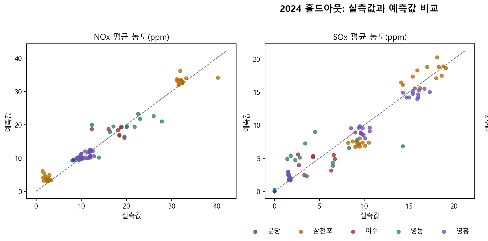
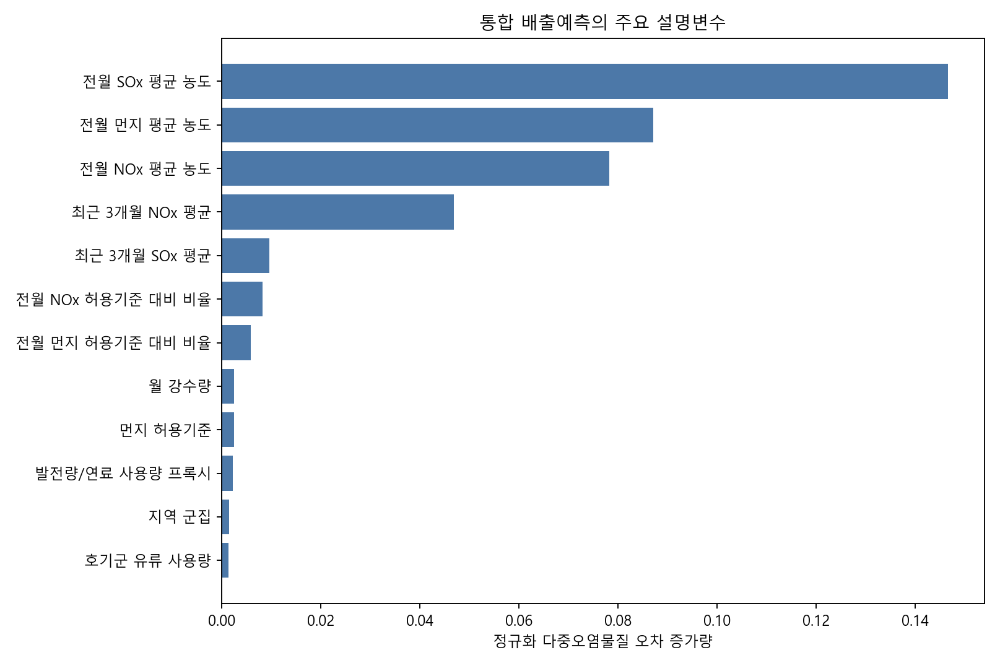
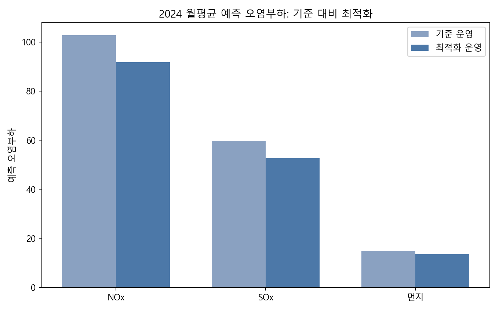

01
배출 데이터와 운영 데이터를 같은 기준으로 통합해 분석용 구조를 만들었습니다.
2026 AX 아이디어 경진대회 분석 사례
데이터 분석 포트폴리오
OH SEUNG JU
발전소 배출 데이터를 통합하고 예측 모델을 구축해 사전 운전 조합 검토가 가능하도록 만든 경험을 정리했습니다.
데이터 분석 / AIoT 개발 직무 준비
분석 결과를 실제 운영 검토에 연결하는 데이터 분석가를 지향합니다.
배출 데이터와 운영 데이터를 같은 기준으로 통합해 분석용 구조를 만들었습니다.
NOx, SOx, 먼지 예측 모델을 구축하고 성능을 비교해 더 적합한 모델을 적용했습니다.
예측값을 환경가중 배출점수로 바꿔 운전 조합 후보를 비교하는 흐름까지 연결했습니다.
배출, 연료, 기상, 발전 데이터를 같은 기준으로 정리
복수 원천 데이터를 비교 가능한 테이블로 통합
선형회귀와 RandomForest를 비교해 적용
Streamlit, Plotly로 결과를 설명 가능한 구조로 전달
Python, Pandas, NumPy로 배출, 연료, 기상, 발전 실적 데이터를 통합했습니다.
문제를 단순 예측이 아니라 운영 전 판단 근거를 만드는 문제로 정의했습니다.
예측 결과를 점수화해 운전 조합 후보 비교까지 연결했습니다.
NOx RMSE
5.77 → 2.16
SOx RMSE
4.40 → 1.90
먼지 RMSE
1.68 → 0.62
환경가중 점수
평균 9.32% 감소
사후 확인 문제를 운영 전 선택지 비교 문제로 전환
운영 데이터와 환경 데이터를 같은 기준으로 정리
선형회귀와 RandomForest의 성능과 활용도 비교
발전량 유지 조건에서 운전 조합 후보를 사전 비교

NOx와 SOx 예측값이 실측값에 얼마나 근접하는지 사업소별로 확인한 결과입니다.

전월 오염물질 평균 농도와 최근 추세 변수가 예측에 크게 작용한 점을 보여줍니다.

기존 운영과 비교해 최적화 운영에서 오염부하가 줄어든 방향을 한눈에 보여주는 차트입니다.
문제를 운영 전 선택지 비교가 가능한 형태로 다시 정의했습니다.
예측값을 비교 가능한 판단 지표로 바꿔 실제 검토 흐름에 연결했습니다.
수치만 제시하지 않고 결과가 어떤 운영 판단으로 이어지는지 해석해 설명했습니다.